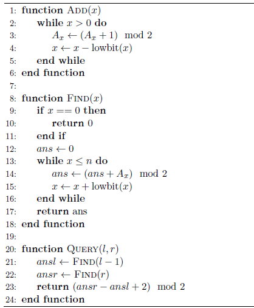

漆黑的晚上，九条可怜躺在床上辗转反侧。难以入眠的她想起了若干年前她的一次悲惨的 OI 比赛经历。那是一道基础的树状数组题。给出一个长度为 $n$ 的数组 $A$，初始值都为 $0$，接下来进行 $m$ 次操作，操作有两种：
1 x，表示将 $A_x$ 变成 $(A_x + 1) \bmod 2$。
2 l r，表示询问 $\sum_{i=l}^r(A_i) \bmod 2，L \le i \le r$
尽管那个时候的可怜非常的 simple，但是她还是发现这题可以用树状数组做。当时非常 young 的她写了如下的算法：

其中 $\mathrm{lowbit}(x)$ 表示数字 $x$ 最低的非 $0$ 二进制位，例如 $\text{lowbit}(5) = 1, \text{lowbit}(12) = 4$。进行第一类操作的时候就调用 $\mathrm{Add}(x)$，第二类操作的时候答案就是 $\mathrm{Query}(l, r)$。
如果你对树状数组比较熟悉，不难发现可怜把树状数组写错了：$\text{Add}$ 和 $\text{Find}$ 中 $x$ 变化的方向反了。因此这个程序在最终测试时华丽的爆 0 了。
然而奇怪的是，在当时，这个程序通过了出题人给出的大样例——这也是可怜没有进行对拍的原因。
现在，可怜想要算一下，这个程序回答对每一个询问的概率是多少，这样她就可以再次的感受到自己是一个多么非的人了。然而时间已经过去了很多年，即使是可怜也没有办法完全回忆起当时的大样例。幸运的是，她回忆起了大部分内容，唯一遗忘的是每一次第一类操作的 $x$ 的值，因此她假定这次操作的 $x$ 是在 $[l_i, r_i]$ 范围内等概率随机的。
具体来说，可怜给出了一个长度为 $n$ 的数组 $A$，初始为 $0$，接下来进行了 $m$ 次操作：
- $1\ l\ r$，表示在区间 $[l, r]$ 中等概率选取一个 $x$ 并执行 $\text{Add}(x)$。
- $2\ l\ r$，表示询问执行$\text{Query}(l, r)$ 得到的结果是正确的概率是多少。
 Comet OJ
Comet OJ